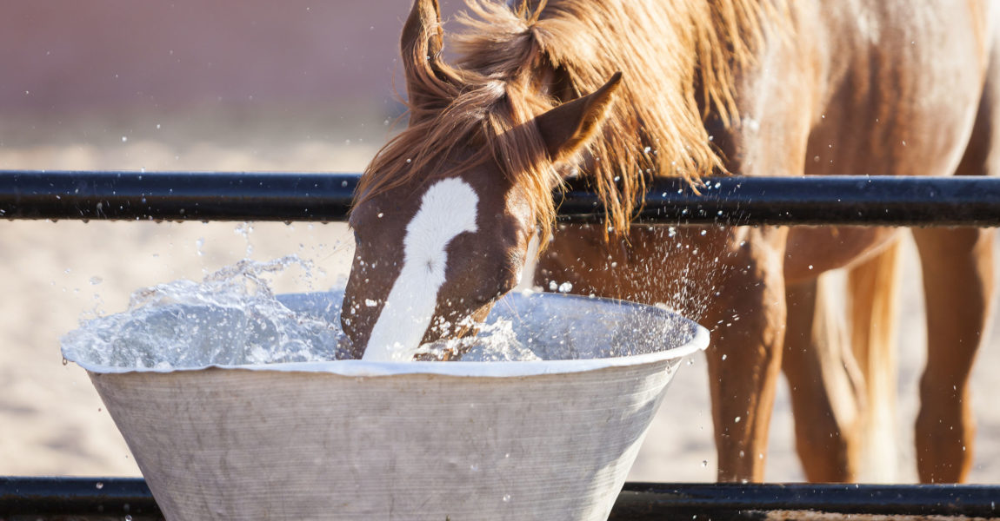

Die Tränke
Pferde trinken pro Tag zwischen 30 und 70 Liter, deshalb ist es wichtig, dass ihnen rund um die Uhr frisches Wasser zur Verfügung steht. Es kann bereits nach 24h zu negativen Folgen führen, wenn ein Pferd nicht ausreichend Wasser zur Verfügung hat. Pro 15-20 Pferde in einer Gruppe sollte mindestens 1 Tränke zur Verfügung stehen.
